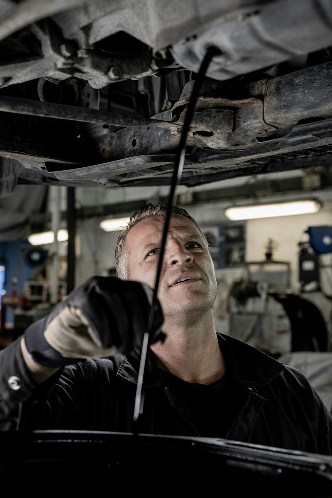

Příprava na STK
Příprava vozidel na STK. Prohlédneme auto a opravíme, co by neprošlo.

Na technickou bez stresu
Zkontrolujeme brzdy, světla, podvozek a emise a opravíme, co je potřeba.
- ProhlídkaCo by neprošlo.
- OpravaPo domluvě.
- KontrolaPřed STK.
- STKMůžete jet.
